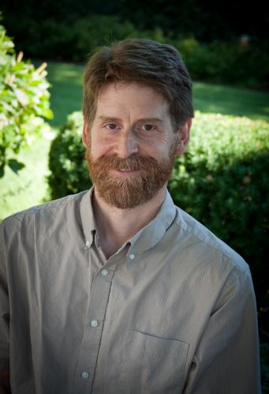

 During an extended undergraduate career at UVM, CS alumnus James Vincent changed majors, took a year off, and eventually earned two B.S. degrees in Chemistry (1990) and Computer Science (1991). As a peer tutor and teaching assistant in Computer Science, Jim enjoyed interacting with students and faculty. He served as co-chair of Engineer's Week and received the Dean's Recognition award for service to the College of Engineering and Mathematical Sciences. As a chemistry major in the College of Arts and Sciences he received the American Chemical Society Undergraduate Award in Analytical Chemistry. During his last year at UVM, Jim worked as a full time employee in Software Engineering at Bio-Tek Inc.
Having B.S. degrees in both Computer Science and Chemistry provided an excellent educational foundation for subsequent graduate work in Computational Chemistry, in which Jim earned his doctorate in 1999 at Pennsylvania State University under a prestigious National Science Foundation fellowship for high performance computing. While at the Pennsylvania State University he developed parallel implementations of molecular dynamics programs for use in protein structural modeling. He set the performance record at the time for a Cray T3E. Although research was engaging, it was no match for the World-famous Penn State fly fishing course; being a serious graduate student, Jim gave this course the time and effort required to earn an A. :
After receiving his PhD, Jim became a post-doctoral fellow at the National Cancer Institute, where he employed protein modeling techniques to refine the structures of novel cancer drugs. This work led to several patents in the reduction of side effects for cancer therapeutics. In conjunction with molecular biologists at the NCI Jim began work on a cancer gene discovery program. This led to a permanent position at the NCI in the Bioinformatics and Molecular Modeling Section of the Laboratory of Molecular Biology.
After eight years at NCI Jim came back to Vermont to become the Director of the Bioinformatics Core in the Vermont Genetics Network at the University of Vermont. He leads a small team of bioinformatics scientists at UVM and Norwich University in support of a variety of research projects across the state. As a member of the lead organization in the North East Cyberinfrastructure Consortium, Jim helped bring a dedicated fiber network to UVM and the north east. Jim is an avid hunter and fisherman and most enjoys bitterly cold winter hunting. He plays a variety of musical instruments, is an accomplished auto mechanic and tries to keep up with his children on the hockey rink and slopes.